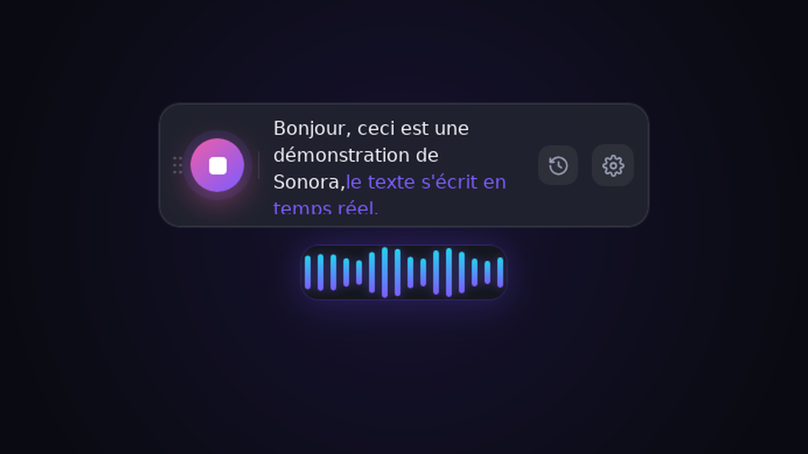
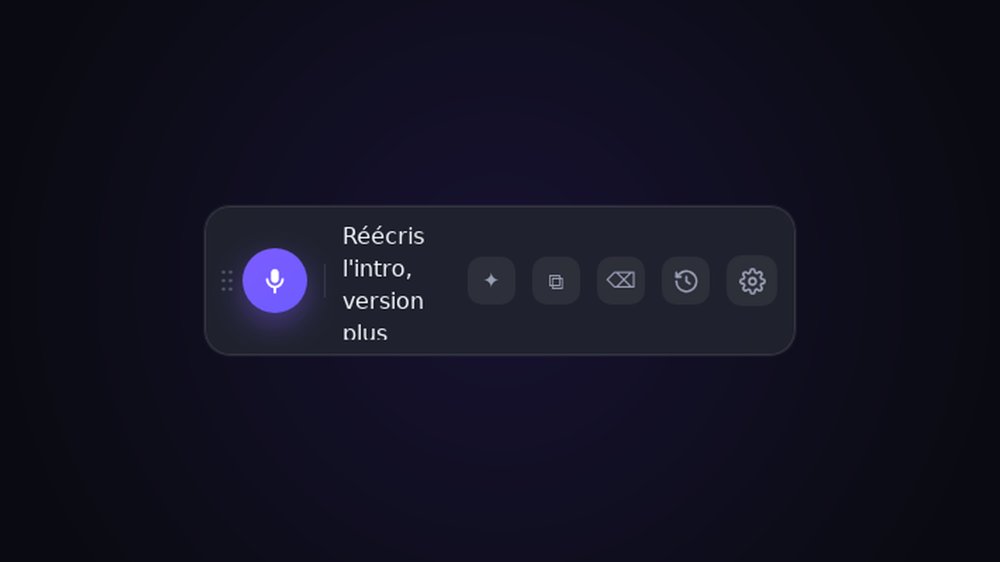

🎙️
Dictée en streaming
Le texte apparaît au fur et à mesure que vous parlez (avec Gemini Live).
Sonora est une barre flottante façon Spotlight, toujours à portée de raccourci. Appuyez, dictez, et le texte apparaît en direct — copié au presse-papier ou tapé directement à l'endroit de votre curseur.

Un outil minimaliste, pensé pour rester hors de votre chemin.
Le texte apparaît au fur et à mesure que vous parlez (avec Gemini Live).
Le résultat est tapé là où vous êtes, ou copié au presse-papier, à votre choix.
Démarrez et arrêtez la dictée sans jamais quitter votre application en cours.
Gemini, Mistral (Voxtral), OpenAI, Groq, tout endpoint compatible, ou Whisper local.
Une passe optionnelle retire les « euh », faux départs et répétitions.
Transformez la dictée via un LLM : ton formel, commande terminal, réécriture pro…
Retrouvez et recopiez vos dictées précédentes en un clic.
Vos clés API sont stockées dans le keyring de l'OS, jamais en clair côté interface.
Clair, sombre ou système, avec une onde sonore pilotée par le vrai niveau audio.
Du cloud le plus rapide au 100 % hors-ligne. Vous gardez le contrôle de vos données.
| Fournisseur | Transcription | Reformulation | Clé requise | Hors-ligne |
|---|---|---|---|---|
| Gemini Live | streaming mot-à-mot | ✓ | oui | — |
| Mistral (Voxtral) | par segment | ✓ | oui | — |
| OpenAI Whisper | par segment | ✓ | oui | — |
| Groq Whisper | par segment rapide | ✓ | oui | — |
| OpenAI-compatible | par segment | ✓ | selon hôte | possible |
| Whisper local (ggml) | par segment | — | non | ✓ |
De l'installation à votre première dictée en moins de deux minutes.
Téléchargez Sonora, ouvrez les Réglages (icône ⚙ de la barre), sélectionnez un fournisseur et collez votre clé API (ou pointez vers un modèle Whisper local).
La barre flottante apparaît, la dictée démarre. Une onde sonore confirme que Sonora vous entend.
Relâchez : le texte est tapé là où vous travailliez, ou copié au presse-papier. Reformulez-le au besoin via vos prompts.

Une démonstration vaut mille mots : la dictée s'écrit en direct, puis arrive au curseur.
Dernière version publiée sur GitHub Releases.
Open source, gratuit, sous licence MIT. Vos clés et vos données restent chez vous.